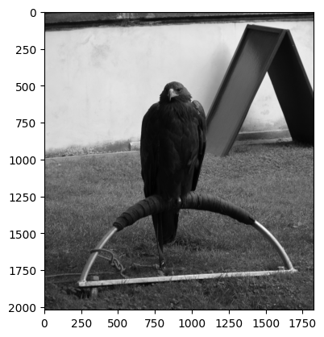
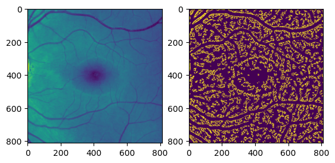
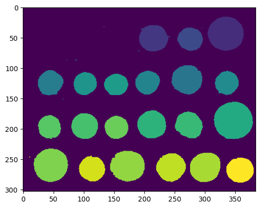
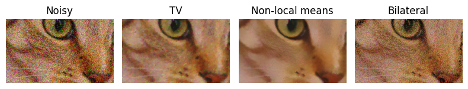

Some aspects of performance in image processing#
Image processing on scientific data can take a long time, especially in settings where a series of images are acquired (time series for example). It is sometimes desirable to reduce the run-time of a given image processing pipeline, for example to make real-time image processing possible.
In this tutorial, we cover several aspects of this specific task.
Measuring computing times and profiling#
If you want to optimize execution time, you first need to measure it.
from skimage import data
import numpy as np
img = data.eagle()
print(img.shape)
(2019, 1826)
import matplotlib.pyplot as plt
plt.imshow(img, cmap='gray')
<matplotlib.image.AxesImage at 0x10b512510>

%%timeit
from skimage import filters
img_median = filters.median(img, footprint=np.ones((7, 7), dtype=bool))
2.6 s ± 1.51 ms per loop (mean ± std. dev. of 7 runs, 1 loop each)
The %%timeit magic has many options (see https://ipython.readthedocs.io/en/stable/interactive/magics.html#magic-timeit). It is also possible to use the timeit module.
from time import time
from skimage import filters
t1 = time()
img_median = filters.median(img, footprint=np.ones((7, 7), dtype=bool))
t2 = time()
print(t2 - t1)
2.6030170917510986
Now we know the time taken by a given function, but we don’t know why it should take a long time to execute. We can use Python’s line profile to dive into the inner code of a function, and to identify which lines of the function take longer to execute.
from skimage import color
img = color.rgb2gray((data.retina()[300:-300, 300:-300]))
out = filters.hessian(img)
fig, ax = plt.subplots(1, 2)
ax[0].imshow(img)
ax[1].imshow(out)
<matplotlib.image.AxesImage at 0x10e977260>

from line_profiler import LineProfiler, show_func
profile = LineProfiler()
profile.add_function(filters.hessian)
out = profile.runcall(filters.hessian, img)
profile.print_stats()
Timer unit: 1e-09 s
Total time: 1.23014 s
File: /Users/mb312/.virtualenvs/test/lib/python3.12/site-packages/skimage/filters/ridges.py
Function: hessian at line 307
Line # Hits Time Per Hit % Time Line Contents
==============================================================
307 def hessian(
308 image,
309 sigmas=range(1, 10, 2),
310 scale_range=None,
311 scale_step=None,
312 alpha=0.5,
313 beta=0.5,
314 gamma=15,
315 black_ridges=True,
316 mode='reflect',
317 cval=0,
318 ):
319 """Filter an image with the Hybrid Hessian filter.
320
321 This filter can be used to detect continuous edges, e.g. vessels,
322 wrinkles, rivers. It can be used to calculate the fraction of the whole
323 image containing such objects.
324
325 Defined only for 2-D and 3-D images. Almost equal to Frangi filter, but
326 uses alternative method of smoothing. Refer to [1]_ to find the differences
327 between Frangi and Hessian filters.
328
329 Parameters
330 ----------
331 image : (M, N[, P]) ndarray
332 Array with input image data.
333 sigmas : iterable of floats, optional
334 Sigmas used as scales of filter, i.e.,
335 np.arange(scale_range[0], scale_range[1], scale_step)
336 scale_range : 2-tuple of floats, optional
337 The range of sigmas used.
338 scale_step : float, optional
339 Step size between sigmas.
340 beta : float, optional
341 Frangi correction constant that adjusts the filter's
342 sensitivity to deviation from a blob-like structure.
343 gamma : float, optional
344 Frangi correction constant that adjusts the filter's
345 sensitivity to areas of high variance/texture/structure.
346 black_ridges : boolean, optional
347 When True (the default), the filter detects black ridges; when
348 False, it detects white ridges.
349 mode : {'constant', 'reflect', 'wrap', 'nearest', 'mirror'}, optional
350 How to handle values outside the image borders.
351 cval : float, optional
352 Used in conjunction with mode 'constant', the value outside
353 the image boundaries.
354
355 Returns
356 -------
357 out : (M, N[, P]) ndarray
358 Filtered image (maximum of pixels across all scales).
359
360 Notes
361 -----
362 Written by Marc Schrijver (November 2001)
363 Re-Written by D. J. Kroon University of Twente (May 2009) [2]_
364
365 See also
366 --------
367 meijering
368 sato
369 frangi
370
371 References
372 ----------
373 .. [1] Ng, C. C., Yap, M. H., Costen, N., & Li, B. (2014,). Automatic
374 wrinkle detection using hybrid Hessian filter. In Asian Conference on
375 Computer Vision (pp. 609-622). Springer International Publishing.
376 :DOI:`10.1007/978-3-319-16811-1_40`
377 .. [2] Kroon, D. J.: Hessian based Frangi vesselness filter.
378 """
379 2 1228535000.0 6.14e+08 99.9 filtered = frangi(
380 1 1000.0 1000.0 0.0 image,
381 1 1000.0 1000.0 0.0 sigmas=sigmas,
382 1 1000.0 1000.0 0.0 scale_range=scale_range,
383 1 1000.0 1000.0 0.0 scale_step=scale_step,
384 1 0.0 0.0 0.0 alpha=alpha,
385 1 0.0 0.0 0.0 beta=beta,
386 1 1000.0 1000.0 0.0 gamma=gamma,
387 1 1000.0 1000.0 0.0 black_ridges=black_ridges,
388 1 1000.0 1000.0 0.0 mode=mode,
389 1 1000.0 1000.0 0.0 cval=cval,
390 )
391
392 1 1600000.0 1.6e+06 0.1 filtered[filtered <= 0] = 1
393 1 1000.0 1000.0 0.0 return filtered
Exercise: what is the function taking the largest part of the execution time inside hessian? Add this function to the line profiler and line-profile this other function while executing hessian.
It is of course possible to apply the line profiler to your own functions. This can be useful when defining for example an image processing pipeline with a succession of operations.
%load_ext line_profiler
from skimage import data
from skimage.filters import threshold_otsu
from skimage.segmentation import clear_border
from skimage.measure import label, regionprops
from skimage.morphology import closing, square
from skimage.color import label2rgb
def get_labels(img):
# apply threshold
thresh = threshold_otsu(image)
bw = closing(image > thresh, square(5))
# remove artifacts connected to image border
cleared = clear_border(bw)
# label image regions
label_image = label(cleared)
return label_image
image = data.coins()
labels = get_labels(img)
plt.imshow(labels)
/var/folders/vr/b3dbt6vd3pd73sjc_t9xj87r0000gn/T/ipykernel_88656/3843504062.py:11: FutureWarning: `square` is deprecated since version 0.25 and will be removed in version 0.27. Use `skimage.morphology.footprint_rectangle` instead.
bw = closing(image > thresh, square(5))
<matplotlib.image.AxesImage at 0x10e2a42c0>

%lprun -f get_labels get_labels(img)
/var/folders/vr/b3dbt6vd3pd73sjc_t9xj87r0000gn/T/ipykernel_88656/3843504062.py:11: FutureWarning: `square` is deprecated since version 0.25 and will be removed in version 0.27. Use `skimage.morphology.footprint_rectangle` instead.
bw = closing(image > thresh, square(5))
scikit-image uses a lot of cython code, and it is also possible to profile cython code. Please see https://cython.readthedocs.io/en/latest/src/tutorial/profiling_tutorial.html for more information.
Parallelizing execution by chunking the image array#
One way to speed up the execution is to use the different CPU cores. Most scikit-image functions use only one core, so the other cores are not working. If we have several images, we can use different cores for the different images (using for example joblib.Parallel or dask). But we can also divide the image into different sub-images and execute the function on the different sub-images. This is done by skimage.util.apply_parallel.
Warning: most functions have boundary effects. Therefore you must use some overlap between the different sub-images in order to avoid artifacts.
img = data.eagle()
print(img.shape)
(2019, 1826)
%%timeit -n 1 -r 1
from time import time
out = filters.median(img, np.ones((11, 11)))
5.59 s ± 0 ns per loop (mean ± std. dev. of 1 run, 1 loop each)
import joblib
joblib.cpu_count()
8
We need to install the optional dependency dask which is used by apply_parallel.
!pip install dask
Requirement already satisfied: dask in /Users/mb312/.virtualenvs/test/lib/python3.12/site-packages (2025.11.0)
Requirement already satisfied: click>=8.1 in /Users/mb312/.virtualenvs/test/lib/python3.12/site-packages (from dask) (8.3.1)
Requirement already satisfied: cloudpickle>=3.0.0 in /Users/mb312/.virtualenvs/test/lib/python3.12/site-packages (from dask) (3.1.2)
Requirement already satisfied: fsspec>=2021.09.0 in /Users/mb312/.virtualenvs/test/lib/python3.12/site-packages (from dask) (2025.10.0)
Requirement already satisfied: packaging>=20.0 in /Users/mb312/.virtualenvs/test/lib/python3.12/site-packages (from dask) (25.0)
Requirement already satisfied: partd>=1.4.0 in /Users/mb312/.virtualenvs/test/lib/python3.12/site-packages (from dask) (1.4.2)
Requirement already satisfied: pyyaml>=5.3.1 in /Users/mb312/.virtualenvs/test/lib/python3.12/site-packages (from dask) (6.0.3)
Requirement already satisfied: toolz>=0.10.0 in /Users/mb312/.virtualenvs/test/lib/python3.12/site-packages (from dask) (1.1.0)
Requirement already satisfied: locket in /Users/mb312/.virtualenvs/test/lib/python3.12/site-packages (from partd>=1.4.0->dask) (1.0.0)
%%timeit -n 1 -r 1
from skimage import util
out = util.apply_parallel(filters.median, img, depth=7, extra_arguments=[np.ones((11, 11))])
1.89 s ± 0 ns per loop (mean ± std. dev. of 1 run, 1 loop each)
%%timeit -n 1 -r 1
from skimage import util
out = util.apply_parallel(filters.median, img, chunks=500, depth=7, extra_arguments=[np.ones((11, 11))])
940 ms ± 0 ns per loop (mean ± std. dev. of 1 run, 1 loop each)
Exercise: try different sizes of chunks and compare the execution times.
Changing the algorithm#
Often, the biggest performance gains are obtained by using a different algorithm. There is often a tradeoff between execution time and algorithm specificity, as exemplified by the example below about denoising. (Example adapted from https://scikit-image.org/docs/stable/auto_examples/filters/plot_denoise.html#sphx-glr-auto-examples-filters-plot-denoise-py).
import matplotlib.pyplot as plt
from skimage.restoration import (denoise_tv_chambolle, denoise_bilateral,
denoise_wavelet, denoise_nl_means, estimate_sigma)
from skimage import data, img_as_float
from skimage.util import random_noise
from time import time
original = img_as_float(data.chelsea()[100:250, 50:300])
sigma = 0.155
noisy = random_noise(original, var=sigma**2)
t0 = time()
img_tv = denoise_tv_chambolle(noisy, weight=0.1, channel_axis=-1)
t1 = time()
print(f"TV: {t1 - t0} s" )
t0 = time()
img_nlmeans = denoise_nl_means(noisy,
channel_axis=-1)
t1 = time()
print(f"Non-local means: {t1 - t0} s")
t0 = time()
img_bil = denoise_bilateral(noisy, sigma_color=0.05, sigma_spatial=11,
channel_axis=-1)
t1 = time()
print(f"Bilateral: {t1 - t0} s")
fig, ax = plt.subplots(nrows=1, ncols=4, figsize=(8, 5),
sharex=True, sharey=True)
plt.gray()
# Estimate the average noise standard deviation across color channels.
sigma_est = estimate_sigma(noisy, channel_axis=-1, average_sigmas=True)
# Due to clipping in random_noise, the estimate will be a bit smaller than the
# specified sigma.
print(f'Estimated Gaussian noise standard deviation = {sigma_est}')
ax[0].imshow(noisy)
ax[0].axis('off')
ax[0].set_title('Noisy')
ax[1].imshow(img_tv)
ax[1].axis('off')
ax[1].set_title('TV')
ax[2].imshow(img_nlmeans)
ax[2].axis('off')
ax[2].set_title('Non-local means')
ax[3].imshow(img_bil)
ax[3].axis('off')
ax[3].set_title('Bilateral')
fig.tight_layout()
plt.show()
TV: 0.04751110076904297 s
Non-local means: 0.1944582462310791 s
Bilateral: 1.6891570091247559 s
Estimated Gaussian noise standard deviation = 0.148683259938031
